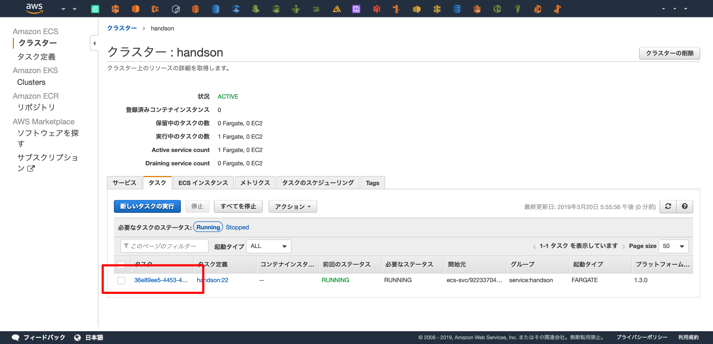
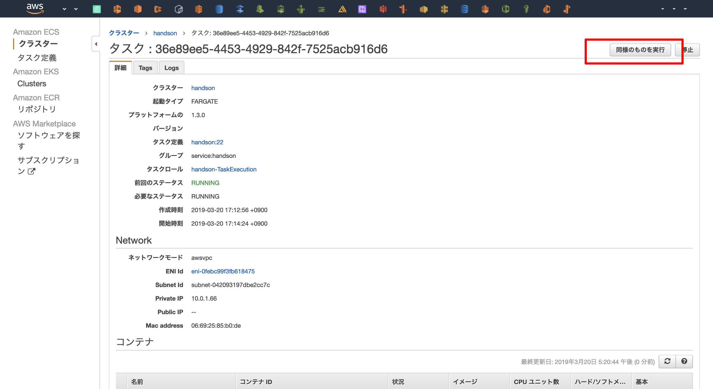
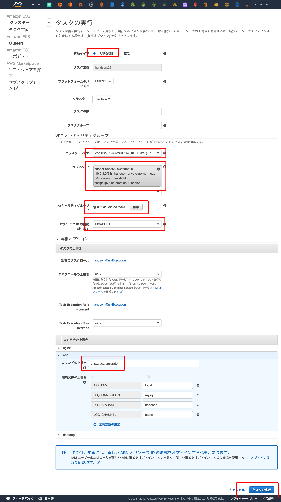
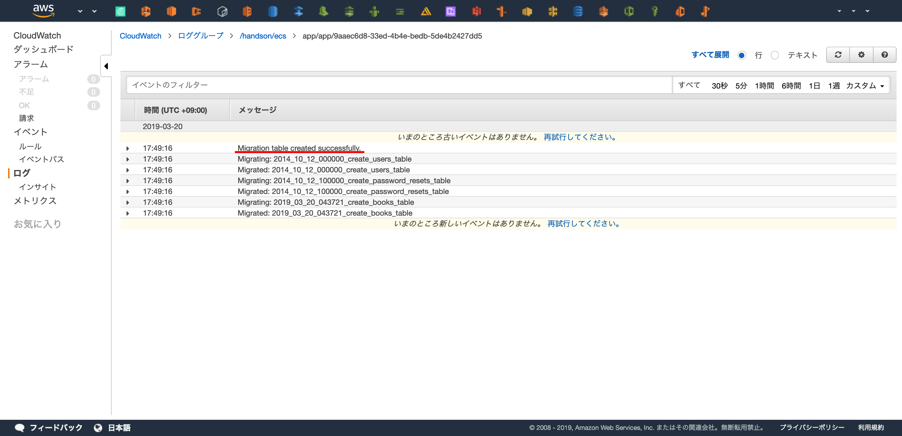

Auroraと連携
概要¶
LaravelとAurora(MySQL)を連携を行います。
Auroraへmigrationの実行¶
ハンズオンでのワンオフの実行なので、GUIからコマンドを実行します。
ECSコンソールに入り、起動中のタスクを選択します。

「同様のものを実行」で起動中のタスクを元に新しいタスクを実行します。

php artisan migrate を実行するために、以下の設定を行います。
- 起動タイプ: FARGATE
- クラスターVPC: <ハンズオンで作成したVPC>
- サブネット: <ハンズオンで作成した プライベートサブネット >
- セキュリティーグループ: <ハンズオンで作成した ECS Service用のセキュリティーグループ >
- パブリックIPの自動割り当て: DISABLE
- コンテナの上書き
- コマンドの上書き:
php,artisan,migrate
- コマンドの上書き:
入力後、「タスクの実行」を押下します。

migration結果の確認


動作確認¶
$ curl <YOUR DNS NAME>/api/books
[]
$ curl -X POST <YOUR DNS NAME>/api/books
{
"title": "tmp title",
"updated_at": "2019-03-20 09:34:00",
"created_at": "2019-03-20 09:34:00",
"id": 1
}
$ curl -X POST <YOUR DNS NAME>/api/books
{
"title": "tmp title",
"updated_at": "2019-03-20 09:34:00",
"created_at": "2019-03-20 09:34:00",
"id": 2
}
$ curl <YOUR DNS NAME>/api/books
[
{
"id": 1,
"title": "tmp title",
"created_at": "2019-03-20 09:33:53",
"updated_at": "2019-03-20 09:33:53"
},
{
"id": 2,
"title": "tmp title",
"created_at": "2019-03-20 09:34:00",
"updated_at": "2019-03-20 09:34:00"
}
]